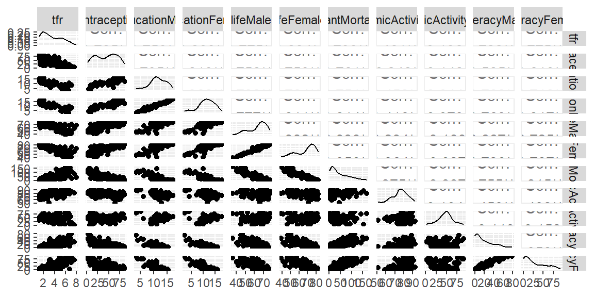
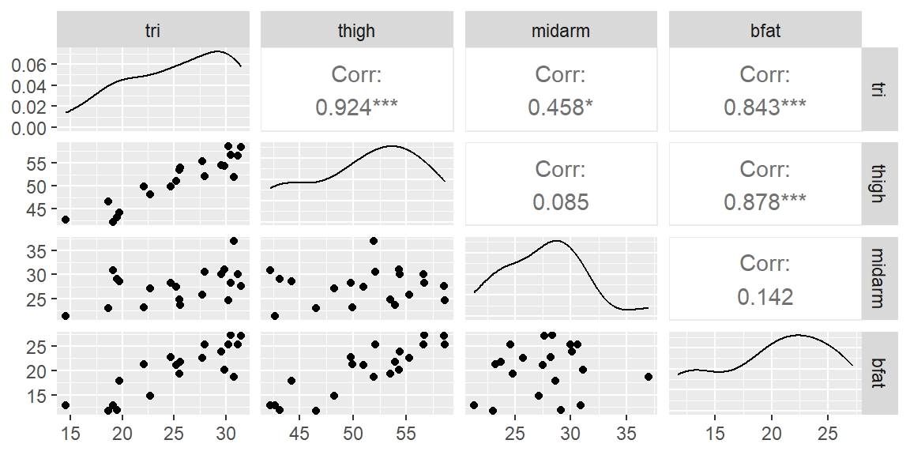
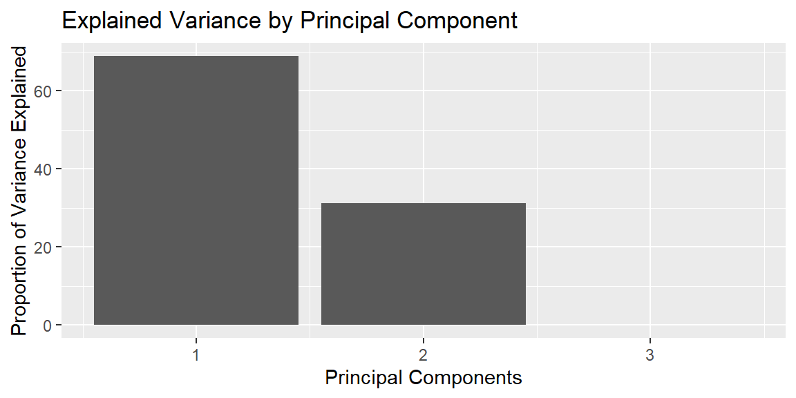
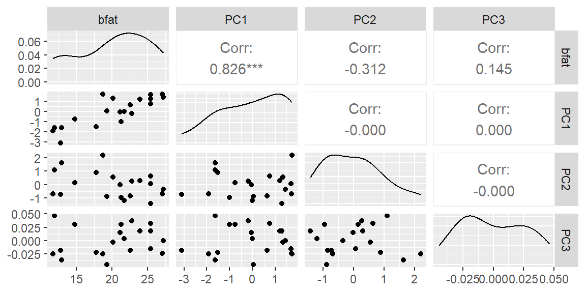

14Multicollinearity and Principal Component Regression
“The greatest value of a picture is when it forces us to notice what we never expected to see.” - John Tukey
14.1 Multicollinearity
Often, two or more of the independent variables used in the model for \(E(y)\) will contribute redundant information. That is, the independent variables will be correlated with each other.
For example, suppose we want to construct a model to predict the gasoline mileage rating, \(y\), of a truck as a function of its load, \(x_1\), and the horsepower, \(x_2\), of its engine.
In general, you would expect heavier loads to require greater horsepower and to result in lower mileage ratings.
Thus, although both \(x_1\) and \(x_2\) contribute information for the prediction of mileage rating, some of the information is overlapping, because \(x_1\) and \(x_2\) are correlated.
When the independent variables are correlated, we say that multicollinearity exists.
The ability to obtain a good fit or to make inferences on the mean response or to predict the response are not affected by multicollinearity. However, inferences for the coefficients (the \(\beta\)s) and for the model variance (\(\sigma^2\)) are affected by large correlation among the predictor variables.
Another effect of multicollinearity is the interpretation of the estimated coefficients. In multiple regression, we interpret the coefficient as the average change in \(y\) when \(x\) is increased by one unit when all other predictor variables are held constant.
If \(x\) is highly correlated with one or more of the other predictor variables, then it may not be feasible to think of varying \(x\) when the others are constant.
14.1.1 Variance Inflation Factors
We can see evidence of multicollinearity by examining the scatterplot matrix since this will give us a plot of each pair of predictor variables. If there are pairs that appear to be highly correlated (ggpairs in R will give the correlation value as well) then multicollinearity will be present.
We could also examine \(R_{a}^{2}\) for models with and without certain pairs of variables. If \(R_{a}^{2}\) decreases when a particular \(x\) variable is added but it appears to have a strong linear relationship with \(y\) in the scatterplot matrix, then this is evidence of multicollinearity.
A more convenient way to examine multicollinearity is through the use of the variance inflation factors (VIF).
Each predictor variable will have a VIF. Suppose we are interested in the VIF for \(x_{1}\). We start by regression \(x_{1}\) on all the other predictor variables. Thus, we fit the model \[
\begin{align*}
x_{i1} & =\alpha_{0}+\alpha_{2}x_{i2}+\alpha_{3}x_{i3}+\cdots+\alpha_{p-1}x_{i,p-1}+\epsilon
\end{align*}
\] where the \(\alpha\)’s are the coefficients and \(\epsilon\) is the random error term.
Now find the coefficient of multiple determination for this model which we will denote as \(R_{1}^{2}\). The VIF for \(x_{1}\) is then \[
\begin{align*}
VIF_{1} & =\frac{1}{1-R_{1}^{2}}.
\end{align*}
\] We can do this for any \(i\)th predictor variable so that the VIF for that variable is \[
\begin{align}
VIF_{i} & =\frac{1}{1-R_{i}^{2}}
\end{align}
\tag{14.1}\] where \(R_{i}^{2}\) is the coefficient of multiple determination for the regression fit of \(x_{i}\) on all the other predictor variables.
A rule of thumb is that a VIF greater than 10 is evidence that multicollinearity is high when that variable is added to the model. Some use a cutoff of 5 instead of 10.
Example 14.1 (UN98 data) One approach to seeing which variables are correlated with each other is to remove a variable with a large VIF and see which variables had the largest change in their VIF.
We will illustrate this process with the dataset from the library. We will not use the and variables for this example.
library(tidyverse)library(tidymodels)library(car)library(GGally)#explore correlation and scatterplots between pairs of variablesUN98 |>select(-region, -GDPperCapita) |>ggpairs()

#prepare datadat_recipe =recipe(infantMortality ~ ., data = UN98) |>step_rm(region, GDPperCapita)#setup modellm_model =linear_reg() |>set_engine("lm")#setup the workflowlm_workflow =workflow() |>add_recipe(dat_recipe) |>add_model(lm_model)#fit the modellm_fit = lm_workflow |>fit(data = UN98)lm_fit |>tidy()
We see that there are a number of variables with high VIF. The highest is lifeFemale. If we remove this variable, what happens to the VIFs of the other variables?
#take out the lifeFemale variablelm_workflow2= lm_workflow |>update_recipe( dat_recipe |>step_rm(lifeFemale) )#fit the modellm_fit2 = lm_workflow2 |>fit(data = UN98)#get the VIFslm_fit2 |>extract_fit_engine() |>vif()
We see that removing lifeFemale leads to a couple of the variable to have a substantial decrease in their VIfs. The variables tfr and lifeMale both decrease by more than five points when lifeFemale is removed. From the scatterplot matrix above, we see that tfr and lifeMale have the highest correlation with lifeFemale. If we are deciding whether to keep lifeFemale in the model, then we can do so with a practical reason. Are any of the variables that are highly correlated with lifeFemale easier to obtain? If so, we should keep that variable and remove the other.
Let’s now look at the next highest VIF: educationFemale.
#take out the educationFemale variablelm_workflow3= lm_workflow |>update_recipe( dat_recipe |>step_rm(educationFemale) )#fit the modellm_fit3 = lm_workflow3 |>fit(data = UN98)#get the VIFslm_fit3 |>extract_fit_engine() |>vif()
We see that educationMale has dropped substantially when educationFemale was removed. Again, deciding which variable to remove from the model is a practical one.
We can continue this process of identifying which variables are highly correlate with other variables.
14.1.2 Effects on Inferences
Recall from Equation 13.3 that we can obtain the variance of the least squares estimators with the diagonal of \({\bf s}^{2}\left[{\bf b}\right]\).
It can be shown that this variance can be expressed in terms of VIF. So the variance of \(b_{j}\) can be expressed as \[
\begin{align}
s^{2}\left[b_{j}\right] & =MSE\frac{VIF_{j}}{\left(n-1\right)\widehat{Var}\left[x_{j}\right]}
\end{align}
\tag{14.2}\] where \(\widehat{Var}\left[x_{j}\right]\) is the sample variance of \(x_j\).
So we see that if \(VIF_{j}\) is large (meaning there is multicollinearity when \(x_{j}\) is included in the model) then the standard error will be larger.
Noting that the test statistic for testing \(\beta_{j}=0\) in Equation 13.5 is \[
\begin{align*}
t^{*} & =\frac{b_{j}}{s\left[b_{j}\right]}
\end{align*}
\]
So an inflated standard error \(s\left[b_{j}\right]\) will lead to a smaller \(t\) and thus a larger p-value. This will cause us to conclude there is not enough evidence for the alternative hypothesis when in fact \(\beta_{j}\ne0\).
14.1.3 Effects on CI and PI for the Response
As stated above, multicollinearity does not affect the confidence interval for the mean response or the prediction interval.
We will illustrate this with the bodyfat data below.
Example 14.2 (bodyfat data)
library(tidyverse)library(tidymodels)library(car)library(GGally)dat =read_table("BodyFat.txt")#examine the scatterplot matrixggpairs(dat)

We see from this scatterplot matrix, that the predictor variables have some high correlation between them. Thus, we already see that there will be a problem with multicollinearity.
#prepare datadat_recipe =recipe(bfat ~ tri + thigh + midarm, data = dat) #setup modellm_model =linear_reg() |>set_engine("lm")#setup the workflowlm_workflow =workflow() |>add_recipe(dat_recipe) |>add_model(lm_model)#fit the modellm_fit = lm_workflow |>fit(data = dat)fit_full = lm_fit |>extract_fit_engine()fit_full |>vif()
tri thigh midarm
708.8429 564.3434 104.6060
From VIFs, we see that there is clear multicollinearity between all three variables.
The highest VIF is tri. From the scatterplot matrix above, we see tri is most correlated with thigh. Let’s remove tri and see what happens.
We see that once tri is removed, the remaining variables have small VIFs.
We are not suggesting that tri should definitely be removed. It may still be the best predictor of bfat. There are other ways to determine if only having tri is preferred over a model with just the other two variables. We will discuss those methods later. For now, we do see that multicollinearity will be an issue for these three variables.
To see the effect on the estimated coefficients, let’s look at the standard errors for the model with all three variables and the model without tri.
Note how much larger the standard errors are for the full model (with multicollinearity) than the model without tri (no multicollinearity).
Larger standard errors will lead to smaller \(t\) statistics and thus larger p-values. So multicollinearity will make variables look like they are insignificant but they really are significant.
Let’s now look at the RMSE (sigma in the glance() function output) which is used in the confidence interval of the mean response and prediction interval formulas.
Note that RMSE is not much different between the two models. It is not affected by multicollinearity. So if all we want to use our model for are estimation of the mean and predictions, then multicollinearity is not an issue. If, however, we want to also determine which variables are important in the estimation and prediction, then multicollinearity is an issue.
14.2 Standardizing Predictor Variables
In linear regression, predictor variables are often transformed to ensure that they are on a comparable scale. This is especially important when predictors have vastly different units or magnitudes, as it can influence the stability and interpretability of the model.
A common technique for transforming predictors is standardization, where each predictor variable is rescaled to have a mean of 0 and a standard deviation of 1. This section will explore the concept of standardization, how it differs from normalization, and the implications for model performance, especially in the context of multicollinearity.
14.2.1 Standardization vs. Normalization
While the terms “standardization” and “normalization” are sometimes used interchangeably, they describe distinct mathematical operations. Standardization transforms a variable \(X\) to have a mean of 0 and a standard deviation of 1, using the following formula:
\[
z_i = \frac{x_i - \bar{x}}{s_x}
\]
where \(z_i\) is the standardized value, \(x_i\) is the original value, \(\bar{x}\) is the mean of the variable, and \(s_x\) is its standard deviation. This process ensures that the transformed variable has a standard normal distribution with mean 0 and standard deviation 1.
Normalization, on the other hand, typically refers to scaling the data to a specific range, such as [0, 1]. This is done using the formula:
Normalization is most useful when the range of the variables needs to be constrained for certain algorithms, such as in neural networks. In contrast, standardization is generally preferred in linear models, where the focus is on centering and rescaling predictors to ensure interpretability of coefficients.
14.2.2 Why tidymodels Uses the Term “Normalize”
In the tidymodels framework in R, the term “normalize” is used to describe what is technically a standardization process. For example, when creating a preprocessing recipe with the recipe() function, the step called step_normalize() computes the mean and standard deviation of each predictor and scales it accordingly. Although the terminology might be confusing, this usage reflects a common convention in some statistical software where both standardization and normalization are loosely referred to as normalization.
14.2.3 Standardization and Multicollinearity
By scaling all predictors to a common variance, the impact of large magnitude differences between variables is reduced, leading to more stable coefficient estimates. Standardization alone does not reduce correlations between variables. However, it provides numerical stability when using methods other than least squares, making it easier to detect and address multicollinearity issues. When multicollinearity is severe, other techniques, such as principal component regression, may be necessary.
14.3 Principal Component Regression
One effective method for addressing multicollinearity is Principal Component Regression (PCR), which combines Principal Component Analysis (PCA) and linear regression. The key idea behind PCR is to transform the original predictor variables into a smaller set of uncorrelated variables, called principal components (PCs), which capture the most variance in the data.
14.3.1 Introduction to Principal Component Analysis (PCA)
PCA is a dimensionality reduction technique that identifies the directions (called principal components) along which the variation in the data is maximized. These directions are orthogonal to each other and ranked by the amount of variance they capture. The first principal component explains the largest amount of variance in the data, followed by the second principal component, and so on. Each principal component is a linear combination of the original predictor variables.
In practical terms, PCA helps to reduce the dimensionality of the data, making it more manageable without losing too much information. This is particularly useful in cases where the number of predictors is large, and some of them are highly correlated.
For those who want to see the math:
Principal components (PCs) are linear transformations of the original predictor variables that aim to capture the maximum variance in the data. Here is a mathematical summary of how these components are computed:
Standardizing the Data Given a dataset with \(p\) predictors \(x_1, x_2, \dots, x_p\) and \(n\) observations, we first standardize each predictor variable to have mean 0 and standard deviation 1:
\[
z_{ij} = \frac{x_{ij} - \bar{x}_j}{s_j}
\]
where: - \(z_{ij}\) is the standardized value of the \(j\)-th predictor for the \(i\)-th observation. - \(\bar{x}_j\) is the mean of the \(j\)-th predictor. - \(s_j\) is the standard deviation of the \(j\)-th predictor.
This step ensures that all variables are on the same scale, which is necessary for PCA.
Computing the Covariance Matrix Once the data is standardized, we compute the covariance matrix \(\mathbf{S}\) of the standardized predictors:
where: - \(\lambda_j\) is the \(j\)-th eigenvalue of the covariance matrix. - \(\mathbf{v}_j\) is the corresponding eigenvector (also called the loading vector) associated with \(\lambda_j\).
The eigenvalues \(\lambda_1, \lambda_2, \dots, \lambda_p\) represent the amount of variance explained by each principal component. The eigenvectors define the direction of the new coordinate axes (principal components).
Constructing the Principal Components The \(j\)-th principal component \(PC_j\) is a linear combination of the original standardized variables:
In the context of regression, instead of regressing the response variable on the original set of predictors, we use the principal components as the new predictors. By selecting a subset of the principal components, we can retain most of the variability in the predictors while reducing multicollinearity.
Example 14.3 (bodyfat data again) The following steps will illustrate how to apply PCA to the predictors and then use the principal components in a regression model.
recipe =recipe(bfat ~ ., data = dat) |>step_normalize(all_predictors()) |>step_pca(all_predictors(), num_comp =3)#determine the parameters for any of the steps in the recipe#in this case, we need the mean and std dev of each variable#along with the values for principal componentsprepped = recipe |>prep()#apply the steps (with the prepared parameters found in prep)#to the datapca_data = prepped |>bake(dat)# Print the principal componentspca_data
The following code provides the principal components derived from the predictors in the BodyFat dataset. Each principal component is a linear combination of the original predictors (tri, thigh, midarm), and they explain the maximum variance in the data.
To visualize how PCA works and to understand the contribution of each principal component, let’s examine the explained variance.
# Extract the PCA resultspca_results = prepped |>tidy(number =2, type="variance")pca_results
# Visualize the explained variancepca_results |>filter(terms =="percent variance") |>ggplot(aes(x = component, y = value)) +geom_bar(stat ="identity") +labs(title ="Explained Variance by Principal Component", x ="Principal Components", y ="Proportion of Variance Explained")

In this plot, we observe the proportion of variance explained by each principal component. The first principal component typically explains the most variance, followed by the second, and so on. Depending on the cumulative proportion of variance explained, we can select an appropriate number of components for our regression model.
Let’s now look at the scatterplot matrix of the PCA data. Note how the correlations between the PCs are zero.
ggpairs(pca_data)

Principal Component Regression is just using these PCs as the predictor variables. We see from above that the third PC does not explain much variability. Thus, we can just use the first two PCs and save a degree of freedom since we will be using one less coefficient in the model.
Note how small the standard errors are for the coefficients now that we no longer have multicollinearity. Let’s verify that there is no multicollinearity by examining the VIFs.
fit = lm_fit |>extract_fit_engine()fit |>vif()
PC1 PC2
1 1
Both VIFs are exactly one indicating no multicollinearity.
PCR gives us the ability to still fit the regression model even in the presence of extreme multicollinearity. Another benefit of PCR is that you can also reduce dimensionality by only using the PCs that explain most of the variability. Note that you still need all the original predictor variables since the PCs are linear combinations of these variables. Thus, this is not a method for removing predictor variables. So if our goal is to determine if a variable (that may be difficult or expensive to obtain) can be dropped, then PCR is not the tool we want to use. In addition, in PCR we lose interpretability of the coefficients.